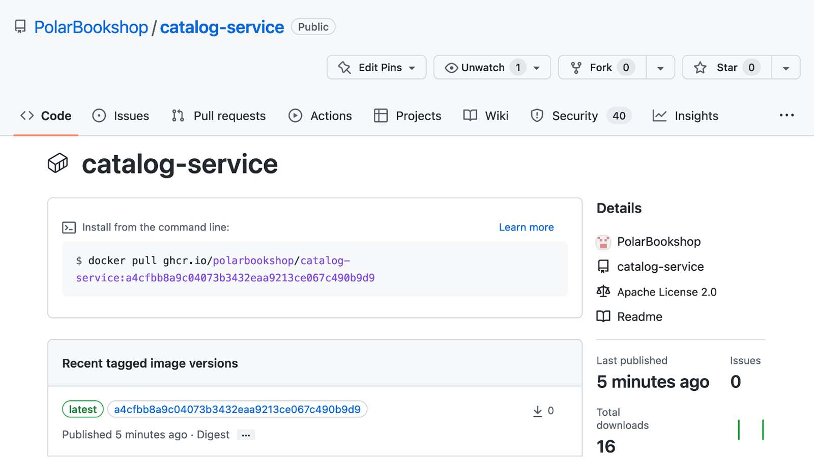

16.2 使用 Spring Cloud Function 构建 Serverless 应用
正如第 1 章所介绍的，Serverless 是在虚拟机和容器之上的进一步抽象层，把更多职责从产品团队转移到平台。遵循 Serverless 计算模型，开发人员只需专注于实现应用的业务逻辑。使用 Kubernetes 之类的编排器，仍然需要进行基础设施配置、容量规划和扩缩容；而 Serverless 平台则会负责为应用运行所需的底层基础设施（包括虚拟机、容器和动态伸缩）进行设置。
Serverless 应用通常只在有事件需要处理时才运行，例如一个 HTTP 请求（请求驱动）或一条消息（事件驱动）。该事件可以由系统外部产生，也可以由另一个函数产生。例如，每当队列中有新消息加入时，可能触发一个函数，处理消息后结束。当没有事情需要处理时，平台会关闭与函数相关的所有资源，这样你就能真正做到按实际用量付费。
在 CaaS 或 PaaS 等其他云原生拓扑中，总会有服务器 24x7 运行。相比传统系统，你能获得动态伸缩的优势，减少任何时刻供应的资源数量。但始终有正在运行的东西并产生成本。而在 Serverless 模型中，资源仅在必要时才被供应，当没有东西可处理时，一切都被关闭。这就是我们所说的缩容到零（scaling to zero），也是 Serverless 平台提供的主要功能之一。
把应用缩到零的后果是：当最终有请求要处理时，会启动一个新的应用实例，它必须能非常快地处理请求。标准 JVM 应用并不适合 Serverless 应用，因为很难达到几秒以下的启动时间。这就是为什么 GraalVM 原生镜像开始流行：它们瞬时启动时间以及更低的内存占用，让它们非常适合 Serverless 模型。瞬时启动是伸缩所必需的，而减少内存占用有助于降低成本，这是 Serverless 和整个云原生的重要目标之一。
除了成本优化，Serverless 技术还把一些额外职责从应用移交给平台。这可能是个优势，因为这让开发人员能完全关注业务逻辑。但也有必要考虑你希望拥有多大程度的控制，以及如何应对供应商锁定。每个 Serverless 平台都有自己的特性和 API。一旦你开始为某个平台编写函数，就不能像对容器那样轻松地把它们迁移到另一个平台。你可能会在职责和规模上获得让步，但在控制和可移植性上失去的比任何其他方式都多。这就是 Knative 迅速流行的原因：它建立在 Kubernetes 上，这意味你可以轻松地在不同平台和供应商之间迁移 Serverless 工作负载。
本节将带你开发和部署一个 Serverless 应用。你将使用 Spring Native 把它编译为 GraalVM 原生镜像，并使用 Spring Cloud Function 以函数形式实现业务逻辑，非常适合 Serverless 应用的事件驱动特性。
16.2.1 使用 Spring Cloud Function 构建 Serverless 应用
你已经在第 10 章接触过 Spring Cloud Function。正如那里学到的，它是一个旨在通过基于 Java 8 引入的标准接口（Supplier、Function 和 Consumer）以函数形式促进业务逻辑实现的项目。
Spring Cloud Function 非常灵活。你已经看到它如何与 RabbitMQ、Kafka 等外部消息系统透明集成，这是构建由消息触发的 Serverless 应用的一个方便特性。在本节中，我想向你展示 Spring Cloud Function 提供的另一个特性：将函数暴露为可由 HTTP 请求和 CloudEvents 触发的端点。CloudEvents 是一个在云架构中标准化事件格式和分布的规范。
我们将遵循与之前构建的 Quote Service 应用相同的需求，但这次把业务逻辑实现为函数，并让框架负责把它们暴露为 HTTP 端点。
使用 Spring Native 和 Spring Cloud Function 引导新项目
你可以从 Spring Initializr（https://start.spring.io）初始化 Quote Function 项目，把结果存到新的 quote-function Git 仓库中，并推送到 GitHub。初始化参数如图 16.2 所示。

图 16.2 初始化 Quote Function 项目的参数项目包括以下依赖：
- Spring Reactive Web：提供构建响应式 Web 应用所需的库（基于 Spring WebFlux），并包含默认的内嵌服务器 Netty。
- Spring Cloud Function：提供以函数形式实现业务逻辑、通过多种通信渠道导出函数、并与 Serverless 平台集成的库。
- Spring Native：支持用 GraalVM 的原生镜像编译器把 Spring 应用编译为原生可执行文件。
生成的 build.gradle 文件的 dependencies 部分如下：
dependencies {
implementation 'org.springframework.boot:spring-boot-starter-webflux'
implementation 'org.springframework.cloud:spring-cloud-starter-function-web'
testImplementation 'org.springframework.boot:spring-boot-starter-test'
testImplementation 'io.projectreactor:reactor-test'
}
然后我们按照 Quote Service 的做法，在 build.gradle 中更新 Cloud Native Buildpacks（原生构建包）配置。
清单 16.8 用于容器化 Quote Function 的配置（使用 Paketo Buildpacks 的 "tiny" 版本以最小化容器镜像体积；启用 GraalVM 支持并生成容器化的原生镜像；通过 publishRegistry 配置镜像仓库发布。上文所述内容是对该清单中代码的注释）
tasks.named('bootBuildImage') {
builder = 'paketobuildpacks/builder:tiny'
environment = ['BP_NATIVE_IMAGE': 'true']
imageName = "${project.name}"
docker {
publishRegistry {
username = project.findProperty("registryUsername")
password = project.findProperty("registryToken")
url = project.findProperty("registryUrl")
}
}
}
接下来，把 Quote Service 中 com.polarbookshop.quoteservice.domain 包的所有类复制到 Quote Function 中全新的 com.polarbookshop.quotefunction.domain 包。下一节我们实现以函数形式的业务逻辑。
以函数形式实现业务逻辑
正如你在第 10 章学到的，当函数被注册为 bean 时，Spring Cloud Function 会增强标准的 Java 函数。我们先为 Quote Function 项目创建新的 com.polarbookshop.quotefunction.functions 包，并添加 QuoteFunctions 类。
应用应该暴露与 Quote Service 类似的功能：
- 返回所有语录可表示为
Supplier，因为它没有输入。 - 返回随机一条语录也可以表示为
Supplier，因为它没有输入。 - 返回指定体裁下一条随机语录可表示为
Function，因为它既有输入又有输出。 - 把一条语录记录到标准输出可以表示为
Consumer，因为它有输入但没有输出。
package com.polarbookshop.quotefunction.functions;
@Configuration
public class QuoteFunctions {
private static final Logger log =
LoggerFactory.getLogger(QuoteFunctions.class);
@Bean
Supplier<Flux<Quote>> allQuotes(QuoteService quoteService) {
return () -> {
log.info("Getting all quotes");
return Flux.fromIterable(quoteService.getAllQuotes())
.delaySequence(Duration.ofSeconds(1));
};
}
@Bean
Supplier<Quote> randomQuote(QuoteService quoteService) {
return () -> {
log.info("Getting random quote");
return quoteService.getRandomQuote();
};
}
@Bean
Consumer<Quote> logQuote() {
return quote -> log.info("Quote: '{}' by {}",
quote.content(), quote.author());
}
}
清单 16.9 以函数形式实现业务逻辑（上述标注：这些函数被声明为 Spring 配置类中的 bean；一个函数使用的日志记录器；产生全部语录的 Supplier，以 1 秒间隔逐个流式输出；产生随机语录的 Supplier；记录收到的语录的 Consumer）
当 Spring web 依赖在 classpath 上时，Spring Cloud Function 会自动把注册的每个函数都暴露为 HTTP 端点。每个端点的名字都与函数名相同。一般来说，Supplier 可以通过 GET 请求调用，Function 和 Consumer 通过 POST 请求调用。
Quote Function 包含 Spring Reactive Web 依赖，因此 Netty 会成为处理 HTTP 请求的服务器。我们让它监听 9102 端口，并配置应用名称。打开 application.yml，添加如下配置。
清单 16.10 配置内嵌 Netty 服务器端口和应用名称
server:
port: 9102
spring:
application:
name: quote-function
然后运行 Quote Function 应用（./gradlew bootRun），打开一个终端窗口。首先可以通过发送 GET 请求测试两个 Supplier：
$ http :9102/allQuotes
$ http :9102/randomQuote
要按体裁获取随机语录，需要把体裁字符串作为 POST 请求的请求体提供：
$ echo 'FANTASY' | http :9102/genreQuote
当只有一个函数注册为 bean 时，Spring Cloud Function 会自动通过根端点暴露它。如果有多个函数，你可以通过 spring.cloud.function.definition 配置属性选择函数。例如，我们可以把 allQuotes 函数通过根端点暴露。在 Quote Function 项目中打开 application.yml，更新如下：
server:
port: 9102
spring:
application:
name: quote-function
cloud:
function:
definition: allQuotes
清单 16.11 定义由 Spring Cloud Function 管理的主函数
在 Quote Function 项目中，通过 spring.cloud.function.definition 属性声明 allQuotes 为 Spring Cloud Function 管理的主函数。重新运行应用，向根端点发送 GET 请求。由于 allQuotes 是返回 Flux<Quote> 的 Supplier，你可以利用 Project Reactor 的流式能力，让应用在语录可用时逐个把语录返回。当请求头 Accept: text/event-stream 存在时（例如 curl -H 'Accept: text/event-stream' localhost:9102），它会自动这样做。如果用 httpie 工具，还需要使用 --stream 参数来启用数据流：
$ http :9102 Accept:text/event-stream --stream
与第 10 章中所做的一样，你可以组合函数构建 pipeline。当函数以 HTTP 端点暴露时，你可以使用逗号（,）动态组合它们。例如，你可以将 genreQuote 函数与 logQuote 组合如下：
$ echo 'FANTASY' | http :9102/genreQuote,logQuote
由于 logQuote 是 Consumer，HTTP 响应为 202 状态，没有内容。如果你查看应用日志，会看到按体裁生成的随机语录已经被打印出来。
Spring Cloud Function 与多种通信渠道集成。你已经看到如何通过 Spring Cloud Stream 利用交换机和队列暴露函数，以及如何把它们暴露为 HTTP 端点。该框架还支持 RSocket（一种二进制响应式协议）和 CloudEvents（一种在云架构中标准化事件格式与分布的规范，https://cloudevents.io）。
CloudEvents 可以通过 HTTP、AMQP（RabbitMQ）等消息渠道和 RSocket 消费。它们保证了描述事件的标准方式，让事件能在各类技术中可移植，包括应用、消息系统、构建工具和平台。
由于 Quote Function 已经配置了把函数暴露为 HTTP 端点，你不需要改任何代码就可以消费 CloudEvents。确保应用正在运行，然后发送携带 CloudEvents 规范定义的额外 HTTP 头的请求：
$ echo 'FANTASY' | http :9102/genreQuote \
ce-specversion:1.0 \
ce-type:quote \
ce-id:394
其中 ce-specversion 是 CloudEvents 规范版本，ce-type 是事件类型（领域专属），ce-id 是事件 ID。测试完成后，用 Ctrl-C 停止进程。
注意：关于 HTTP、CloudEvents 和 RSocket 如何被支持，可参考 Spring Cloud Function 官方文档（https://spring.io/projects/spring-cloud-function）。
16.2.2 部署流水线：构建与发布
遵循全书介绍的持续交付原则与技术，我们可以为 Quote Service 和 Quote Function 实现部署流水线。由于这些项目的发布候选是一个容器镜像，所以绝大多数操作与标准 JVM 应用相同。
在本地工作时，更方便的做法是在 JVM 上运行并测试 Serverless 应用，因为它的构建时间更短、资源需求更低。不过，为了获得更好的质量并尽早捕获错误，我们应该尽量在交付流程早期就运行和验证应用的原生模式。提交阶段就是编译和测试应用的地方，把这些额外步骤加在那里应该不错。
清单 16.12 用于以原生模式构建并测试应用的 job
在 Quote Function 项目（quote-function）中，添加 .github/workflows 文件夹，创建 commit-stage.yml 文件。作为起点，你可以从我们之前构建的应用（比如 Catalog Service）中复制提交阶段的实现。我们一直使用的提交阶段工作流由两个 job 组成："构建与测试"和"打包与发布"。我们复用其他应用的实现，但要添加一个负责测试原生模式的中间 job。
name: Commit Stage
on: push
env:
REGISTRY: ghcr.io
IMAGE_NAME: <your_github_username>/quote-function
VERSION: ${{ github.sha }}
jobs:
build:
name: Build and Test
...
native:
name: Build and Test (Native)
runs-on: ubuntu-22.04
permissions:
contents: read
steps:
- name: Checkout source code
uses: actions/checkout@v3
- name: Set up GraalVM
uses: graalvm/setup-graalvm@v1
with:
version: '22.1.0'
java-version: '17'
components: 'native-image'
github-token: ${{ secrets.GITHUB_TOKEN }}
- name: Build, unit tests and integration tests (native)
run: |
chmod +x gradlew
./gradlew nativeBuild
package:
name: Package and Publish
if: ${{ github.ref == 'refs/heads/main' }}
needs: [ build, native ]
...
注释（对上面 YAML 的说明，位于书中正文）：
REGISTRY：使用 GitHub 容器仓库（Container Registry）IMAGE_NAME：镜像的名称，记得加上你的 GitHub 用户名（全部小写）VERSION：为简洁起见，任何新镜像都被标注为 "latest"（对应 publish 阶段的处理）native：job 的唯一标识name: Build and Test (Native)：对人类友好的 job 名称runs-on: job 运行的机器类型permissions: 授予 job 的权限contents: read：允许检查出当前 Git 仓库actions/checkout@v3：检出当前 Git 仓库（quote-function）graalvm/setup-graalvm@v1：安装并配置 GraalVM（Java 17 + 原生镜像组件）./gradlew nativeBuild：把应用编译为原生可执行文件并运行单元与集成测试needs: [ build, native ]："Package and Publish" job 只有在前两个 job 都成功后才执行
注意：在本书的源代码仓库中，你可以在 Chapter16/16-end/quote-function 文件夹下检查最终结果。
完成后，提交所有改动并推送到 GitHub 的 quote-function 仓库以触发提交阶段工作流。本章稍后我们会使用该工作流发布的容器镜像，所以要确保它运行成功。
你会注意到 Quote Function 的提交阶段执行时间比书中其他应用长得多。在第 3 章中我写道，提交阶段速度要快（最好低于五分钟），以便为开发人员对其改动提供快速反馈，让他们能继续推进下一个任务。我们刚添加的使用 GraalVM 的额外步骤可能会让工作流过度变慢。这种情况下，你可以考虑把这个检查移到验收阶段，那里允许整个流程耗时更长。
下一节将介绍使用 Spring Cloud Function 部署 Serverless 应用的其他一些选项。
16.2.3 在云上部署 Serverless 应用
使用 Spring Cloud Function 的应用可以用几种不同方式部署。首先，由于它们仍然是 Spring Boot 应用，你可以打包为 JAR 工件或容器镜像，分别部署到服务器或容器运行时（如 Docker 或 Kubernetes），与之前各章的操作完全一致。
然后，当包含 Spring Native 时，你还可以将它们编译为原生镜像并直接运行在服务器或容器运行时上。感谢快速的启动时间和更小内存占用，你也可以顺利把这类应用部署到 Serverless 平台。下一节介绍如何使用 Knative 在 Kubernetes 上运行 Serverless 工作负载。
Spring Cloud Function 还支持将应用部署到厂商特定的 FaaS 平台，如 AWS Lambda、Azure Functions 和 Google Cloud Functions。选定平台后，可以添加框架提供的相应适配器完成集成。每个适配器的工作方式略有不同，取决于具体平台以及将函数与底层基础设施集成所需的配置。Spring Cloud Function 提供的适配器不需要修改你的业务逻辑，但可能需要一些额外的代码来配置集成。
当使用其中的适配器时，你必须选择要与平台集成的函数。如果只注册了单个函数，那就是要使用的函数。如果有多个函数（比如 Quote Function），你需要使用 spring.cloud.function.definition 属性来声明 FaaS 平台将管理哪个函数。
注意：关于 Spring Cloud Function 针对 AWS Lambda、Azure Functions 和 Google Cloud Functions 的适配器，可以参考 Spring Cloud Function 官方网站（https://spring.io/projects/spring-cloud-function）
下一节将介绍如何使用 Knative 在基于 Kubernetes 的平台上部署诸如 Quote Function 这样的 Serverless 应用。